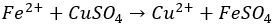

Stage 1 Chemistry | Practical Report | May 2018
A single displacement reaction occurs when a metal, and a chemical compound in the aqueous form comes into contact with each other. In this reaction the metal will displace the other metal in the compound and bond with the second element. The general equation for this reaction can be shown below:
However, the metal reactant in this equation can only cause a single displacement reaction if it is higher in reactivity. The reactivity of an element is usually determined by the number of electrons it has. The more electrons a metal has, the more shells it contains. Each new shell is further away from the nucleus of the atom and so the attraction between the negative charge of the electrons and the positive charge of the protons becomes weaker. A weaker attraction means the metal is more likely to donate its electrons, and therefore is more reactive. In the single replacement reaction, the more reactive metal will donate its electrons to the non-metal in the compound. That non-metal will give the electrons it obtained from the less reactive metal back to it, breaking the ionic bond, and then bond with the new more reactive metal.
Scientists have actually organised the metals into a list in order of most reactive at the top, and least reactive at the bottom. This list is called the metal activity series, and with it, one can predict whether a metal will react with an aqueous to cause a single displacement reaction. Only a metal with higher reactivity than the other can cause this reaction. If it isn’t, the reaction will not occur.
The aim of the practical experiment identify or predict the unknown metals by observing the reactions with the known aqueous solutions and using the metal activity series.
When the unknown metal is placed in the solution, if a reaction occurs and can be seen, it can be assumed that the metal used has a higher reactivity than the metal in the aqueous compound and is higher in the metal reactivity list. If there is no reaction, then the metal is lower in the reactivity, and is lower on the metal reactivity series.
Control: Volume/Concentration of solution, temperature
Independent: Aqueous solutions (Copper sulphate, Zinc sulphate, Aluminium sulphate, Magnesium Sulphate, Iron Sulphate), unknown metals
Dependant: Reaction, product of reaction
| Hazard | Risk | Prevention | Action |
|---|---|---|---|
| Broken glass from broken test tubes | Low | Be careful when handling test tubes | Clean up broken glass immediately. Use dust pan and brush or vacuum cleaner to ensure the risk is eliminated |
| Skin contact with chemicals | Medium | Be careful when handling test tubes | Tell teacher, rinse under running water, go to front office if severe |
| Metal 1 | Metal 2 | Metal 3 | Metal 4 | Metal 5 | |
|---|---|---|---|---|---|
| Original | Bronze colour, rectangular sheet | Silver colour, rectangular sheet | Small, dark, grey fragments | Silver colour, rectangular sheet, rough texture | Large, dark grey balls |
| Magnesium Sulphate | No reaction | No reaction | No reaction | No reaction | No reaction |
| Aluminium Sulphate | No reaction | No reaction | Small bubbles, aqueous becomes darker | No reaction | No reaction |
| Zinc Sulphate | No reaction | No reaction | No reaction | Turning black, flaking, dissolving (smaller reaction than with copper sulphate) | No reaction |
| Iron Sulphate | No reaction | No reaction | No reaction | Turns darker immediately, fizzing bubbles | No reaction |
| Copper Sulphate | No reaction | Turning black at edges, black edges are crystal-like, turns completely black after 5 minutes | Change of colour (orange), small bubbles, aqueous changed colour (more clear) | Turning black, flaking, dissolving, small bubbles, flakes turn orange after 3 minutes, after 5 minutes it starts dissolving more rapidly (more bubbles), colour change to grey. | No reaction |
The first metal, a small, bronze coloured, rectangular, sheet did not react with any of the aqueous solutions. This means that this metal is weaker in reactivity than copper, which is the weakest of all the solutions. Due to this fact, and because of this metal’s physical properties (bronze colour), it is most likely that his metal is copper. This is because the metal copper is not strong enough in reactivity to displace another copper in the copper sulphate solution (or any of the other solutions), and copper in its natural form is bronze in colour.
The second metal was a silver rectangular sheet. This metal only reacted in one of the solutions, the copper sulphate which has the weakest reactivity of all the solutions. Because this metal reacted with it, but did not react with the iron sulphate, it means that the metal is stronger in reactivity than copper, but weaker than iron. It could be either lead or tin. Because quite a strong reaction was observed, as the metal turned completely black in only a few minutes, it is more likely for metal 2 to be tin, as tin is higher in reactivity than lead.
The third metal was a small pile of dark grey rocks. It would be hard to accurately predict what this metal is as the results are a bit confusing, and an observation error may have occurred. It had a small reaction with the aluminium sulphate, showing that it is higher in reactivity than aluminium, however it did not react with the zinc or iron sulphates, which are both weaker than aluminium, so theoretically, there should have been a reaction. Because of the confusing results, it would not be accurate to assume what this metal is using the metal reactivity series. Instead, it can be predicted by observing its physical properties. Due to it being dark grey in colour, it can be assumed that it is iron.
Metal 4 looked very similar to metal 2, as it was silver in colour and a rectangular sheet. The only obvious physical property difference from metal 2 that could be seen was its slightly rougher texture. This metal had a reaction with three of the aqueous solutions: copper sulphate, iron sulphate, and zinc sulphate. It did not react with aluminium sulphate or magnesium sulphate. In terms of reactivity, metal 4 is stronger than zinc, but not aluminium. This means that metal 4 is almost definitely aluminium because aluminium would not be strong enough to displace itself, but it would be strong enough to displace every other metal below it in the metal reactivity series, which it did.
The fifth and final metal, which was a group of large, dark grey balls, did not react with any of the aqueous solutions. This indicates that metal 5 is weaker in reactivity than copper, and could be mercury, silver or gold. Of these three metals, it is most likely silver. This is because the dark grey metal balls did not match the usual physical properties of mercury (which is a liquid metal at room temperature) or gold (which is usually a dark yellow colour).
| Random | Systematic | |
|---|---|---|
| Error | Copy/Observation error | Not controlling control variables |
| Explanation | During the practical, several experiments were going on at once, and many reactions had to be observed at the same time. Due to this, it is possible that one or two reactions could have been missed, and not recorded | If volume of solution is not the same in each test tube, then experiments may differ and create inaccurate results |
| Prevention |
|
Measure volume of solution before putting into test tube |
There were mainly two limitations that were present during the practical experiment. The first was the tool used for observation. This was limited to only the human eye which is not considered sufficient as there could have been a reaction that occurred at smaller level that could not be observed. Because all the magnifying glasses were being used by other groups, the results for this experiment could have been less accurate as only ones eyes could be used to monitor the reaction.
The second limitation was time. On the first day of the practical, there was a special assembly time table, and the time for the practical was significantly shortened. This caused many students to rush through the experiment, when they should have been taking their time to produce accurate observations and results.
At the end of this experiment, all 5 of the metals were predicted. The hypothesis was correct. When a reaction occurred between the metal and the aqueous solution, it was deduced that the unknown metal was higher in the reactivity series than the metal in the solution. When no reaction was observed, was deduced to be lower in reactivity. With the use of the metal activity series, and the observation of each metal’s physical properties, it was concluded that metal 1 was copper, metal 2 was tin, metal 3 was iron, metal 4 was aluminium and metal 5 was silver.